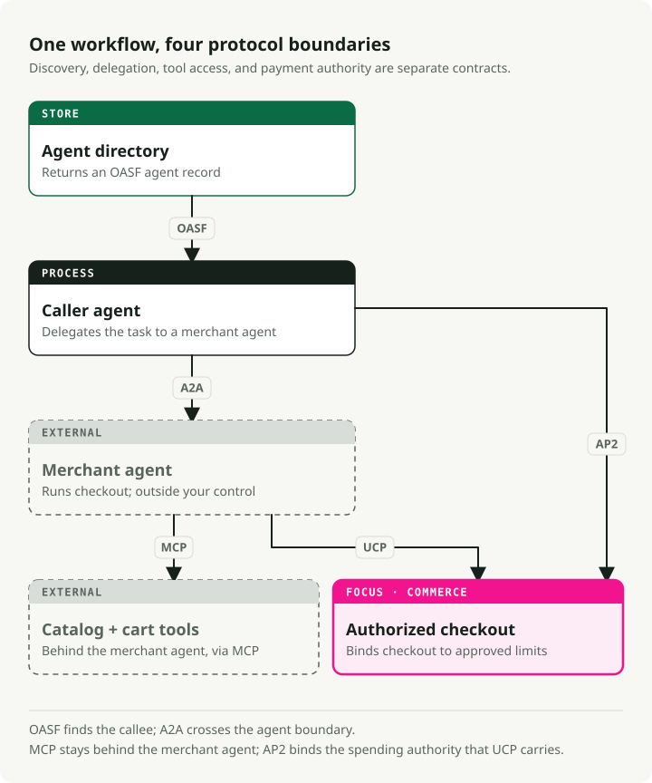

Agent Interop in 2026: MCP, A2A, AP2, and the Protocol Boundary Problem
AI agents have rediscovered an old software problem: every useful system needs to talk to every other useful system. If each agent framework, tool server, merchant API, and enterprise platform invents its own connector, the integration graph turns back into an N-by-M mess.
The good news is that the protocol layer is no longer empty. The bad news is that people keep talking about it as if one protocol should win.
TL;DR: Use MCP inside the agent boundary for tools, resources, prompts, and context. Use A2A across agent boundaries for delegated tasks, Agent Cards, task state, streaming, and long-running work. Treat AGNTCY-style directories, OASF records, identity, and messaging as discovery and trust infrastructure around those calls. Use AP2/UCP when the workflow crosses into commerce, because payment needs proof of user intent, a bounded mandate, and an audit trail.
The map is simpler if you draw boundaries
Here is the split I would use today:

MCP and A2A are often described as competitors. That is the wrong frame. They sit on different edges.
MCP connects an agent host to tools and context. The latest MCP specification defines hosts, clients, and servers; it uses JSON-RPC 2.0; and it gives servers features such as resources, prompts, and tools. Clients can offer roots, sampling, and elicitation. That is a tool/context contract.
A2A connects one agent to another agent. The A2A specification defines Agent Cards, task operations, task states, streaming updates, push notifications, and protocol bindings for JSON-RPC, gRPC, and HTTP/JSON. That is a delegation contract.
Then there is discovery and identity. AGNTCY's docs describe OASF for agent descriptions, an Agent Directory, SLIM messaging, identity, observability, and evaluation. Those components answer questions MCP and A2A mostly leave to the surrounding system: how do I find the right agent, verify what it is, and route work through a larger network?
Payment is another boundary again. AP2 is about payment authority: verifiable credentials, checkout mandates, payment mandates, and proof that a user authorized a bounded transaction. UCP is about the commerce lifecycle around that: catalog, cart, checkout, identity linking, order management, and merchant control.
That split matters because each boundary fails differently.
MCP is not agent-to-agent protocol
MCP won attention because it solved a real pain point. Before MCP, every agent host needed a connector for every tool surface. Files, GitHub, Postgres, Slack, internal APIs, cloud consoles, and browser automation all became one-off adapter work.
MCP gives that adapter work a standard shape. A host can connect to a server, negotiate capabilities, list tools, read resources, and call functions through a shared protocol. The spec also names the trust problem directly: tools can execute arbitrary code, tool descriptions are untrusted unless they come from a trusted server, and hosts must get explicit user consent before tool calls.
That is the right level of paranoia. Tool descriptions are part of the prompt surface. Resource contents can carry instructions. A tool call can mutate real state. MCP gives you a standard wire format, not automatic safety.
The design implication is straightforward: put MCP behind your agent harness, not in place of the harness. The harness still owns approvals, scopes, logging, replay, and policy checks.
A2A is task delegation with state
A2A starts from a different assumption: the remote thing is not a tool. It is another agent with its own skills, runtime, state, auth requirements, and latency.
Agent Cards carry more than marketing metadata. They tell a caller what the remote agent claims to do, where to reach it, which interfaces it supports, and what security schemes apply. The A2A spec also includes task operations such as sending a message, sending a streaming message, getting or listing tasks, canceling tasks, subscribing to task updates, and configuring push notifications.
This is the part I like most: A2A treats long-running work as normal. A delegated task can move through states, stream updates, require authorization, and resume notification through polling, streaming, or webhooks. That fits the shape of real agent work much better than pretending every remote call is a synchronous function.
The Linux Foundation launch also matters. Google starting a protocol is useful. A neutral home with named support from enterprise vendors is more useful if you expect cross-vendor workflows.
Still, support is not production traffic. I would treat A2A as the best bet for cross-agent delegation, while remaining skeptical of any claim that announced support equals real interoperability.
ACP and ANP are not in the same maturity bucket
This part is messier.
The agent protocol survey compares MCP, ACP, A2A, and ANP across interaction modes, discovery, communication patterns, and security models. Its useful framing is that MCP starts with tools, A2A with task outsourcing, ACP with REST-native multimodal messaging, and ANP with decentralized discovery and secure collaboration through identifiers and graphs.
ANP also has a technical white paper that describes a three-layer system for identity, encrypted communication, meta-protocol negotiation, and application protocols.
I would not put ACP or ANP in the same adoption bucket as MCP or A2A. They are worth watching because they name real gaps: open-network discovery, identity, negotiation, and decentralized agent collaboration. But if I had to ship an enterprise integration this quarter, I would start with MCP for tools, A2A for delegated work, and a directory/identity layer around them.
That is not an argument against the research. It is just the difference between "interesting protocol direction" and "default production choice."
Commerce changes the rules
Shopping agents are where loose protocol thinking gets expensive.
A catalog lookup can be an MCP tool. A merchant assistant can be an A2A agent. But a payment has liability, authorization, fraud risk, revocation, dispute handling, and regulatory baggage.
AP2 exists because the old checkout assumption breaks: a human is not always clicking "buy" on a merchant page at the moment of authorization. AP2's docs frame the core questions well: how can a merchant verify that a user gave an agent authority for a specific purchase, how can the request reflect the user's intent rather than an agent hallucination, and who is accountable when something goes wrong?
The AP2 answer is mandate-based. A checkout mandate captures purchase details and constraints. A payment mandate authorizes a payment instrument. The mandates are verifiable digital credentials and can be chained into an audit trail.
UCP then wraps commerce objects around that. Its docs say UCP uses REST and JSON-RPC transports and has built-in support for AP2, A2A, and MCP. It covers catalog search, cart building, identity linking, checkout, and order management. The public partner list is long: retailers, travel providers, payment networks, processors, and platforms.
One caveat: partner logos do not prove broad deployment. They prove ecosystem intent. For now, I would read AP2/UCP as the direction of travel for agentic commerce, not as something every merchant already supports.
The demo: why the boundaries compose
I added a small offline demo in:
work/demo/2026-06-15-agent-interop-protocols/
Run it with:
uv run demo.py
The demo uses no live APIs. It models a merchant agent card, a scoped MCP-style tool registry, an A2A-style task state machine, and an AP2-style signed mandate. The interesting check is not the happy path. It is what gets rejected.
From work/demo/2026-06-15-agent-interop-protocols/demo.py:
if not verify_mandate(mandate):
return {"state": TaskState.REJECTED, "reason": "mandate signature failed"}
quote = call_mcp_tool("cart.quote", {"item_id": chosen_item_id}, scopes)
if quote["cart_id"] != mandate.cart_id:
return {"state": TaskState.REJECTED, "reason": "cart does not match mandate"}
if quote["item_id"] not in mandate.allowed_item_ids:
return {"state": TaskState.REJECTED, "reason": "item outside mandate"}
The smoke run completes a legitimate checkout, rejects a malicious upsell, and rejects an unsafe MCP tool because the remote agent lacks warehouse:write. That is the article in miniature: agent interop is useful only when discovery, delegation, tool scope, and user authority stay separate enough to audit.
Security is mostly boundary confusion
The scary failures happen when one boundary quietly pretends to be another.
If a tool description can smuggle instructions into the model, the tool boundary leaked into the prompt boundary. If an A2A task passes credentials through a chain of agents, the delegation boundary leaked into the secret boundary. If a checkout agent can change the cart after authorization, the commerce boundary leaked into the conversation boundary.
A2A's spec acknowledges in-task authorization directly. It allows a task to enter auth-required, and it warns that in-band credential exchange across chains of agents exposes those credentials to each participating agent. AP2 research is already probing similar gaps. One red-team paper attacks AP2-style shopping agents through prompt injection. Another runtime verification paper focuses on replay and context-binding failures in mandate lifecycles.
There is also an identity gap. The AIP paper argues that agents increasingly call tools through MCP and delegate through A2A, while neither protocol by itself solves verifiable agent identity and chained delegation. You do not have to adopt that paper's specific token design to accept the diagnosis: cross-agent work needs stronger identity, attenuation, provenance, and revocation than a plain bearer token gives you.
What I would ship now
For a production team, I would keep the stack boring:
- Use MCP for tool and data integration where the host can enforce scopes, approvals, logging, and sandbox policy.
- Use A2A for remote agent delegation when the callee has its own runtime and task state.
- Keep a registry or directory layer for discovery, capability metadata, provenance, and identity. AGNTCY/OASF is worth tracking here.
- Do not run payments as ordinary tool calls. Use a mandate-style design, whether AP2 itself or an equivalent internal control plane.
- Treat ACP, ANP, and newer coordination protocols as research and ecosystem signals until your platform or partners actually require them.
The protocol winner matters less than boundary discipline. A protocol can standardize messages. It cannot decide which agent may spend money, which tool output is trusted, or which delegated task can receive credentials. That still belongs in the system design.
Key takeaways
- MCP and A2A solve different problems. MCP is for tools and context; A2A is for agent-to-agent task delegation.
- Directories, identity, and provenance are not optional once agents discover each other dynamically.
- AP2/UCP are commerce protocols, not generic agent chat protocols. Their value is bounded authorization and accountability.
- Announced protocol support is not the same as production interoperability. Build around verifiable contracts, not logos.
- Most security failures come from boundary confusion: tool output treated as instruction, delegated tasks treated as trusted callers, or payment authority treated as conversation state.
References
- Model Context Protocol specification
- A2A protocol specification
- A2A GitHub repository
- Linux Foundation A2A launch
- AGNTCY documentation
- AP2 documentation
- AP2 GitHub repository
- UCP documentation
- A survey of agent interoperability protocols
- Agent Network Protocol technical white paper
- Whispers of Wealth: Red-Teaming Google's Agent Payments Protocol via Prompt Injection
- Zero-Trust Runtime Verification for Agentic Payment Protocols
- AIP: Agent Identity Protocol for Verifiable Delegation Across MCP and A2A